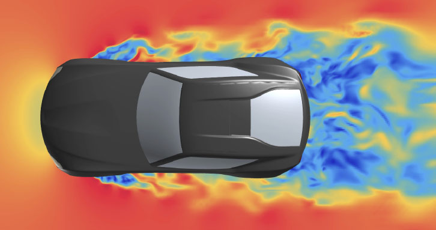
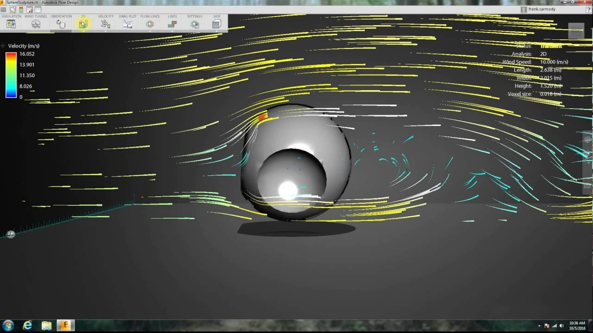
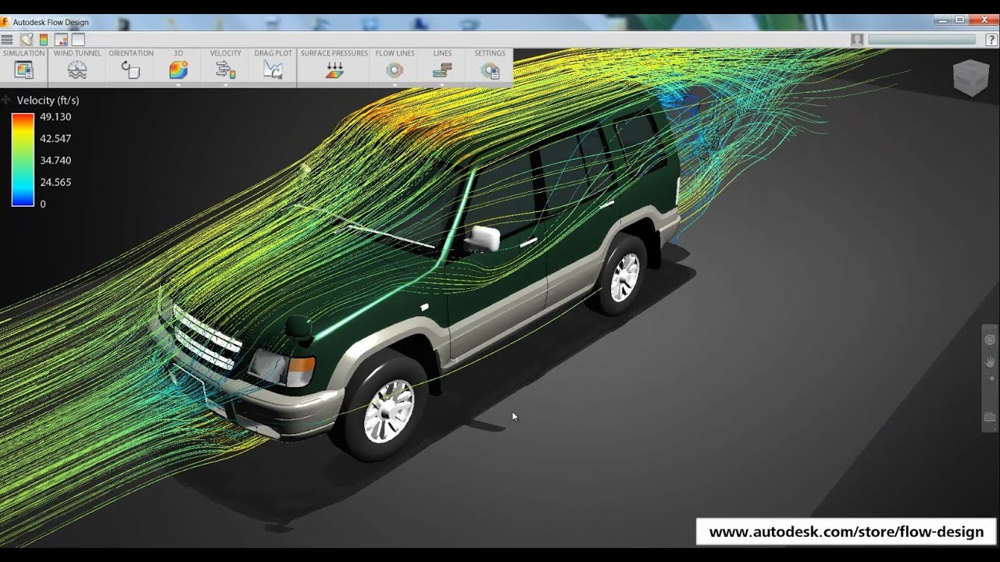

Air Tunnel Aerodynamics
by Alexandru Petrusca
High-Level Description
This project will focus on simulating the operations of a wind tunnel and developing different techniques to visualize the air flow within the tunnel as it interacts with obstacle objects. The project is composed of 2 main parts: the simulation and the visualization. For the simulation, the Navier-Stokes equations will be used to model the air flow through the tunnel. Objects inside the tunnel and the wind-tunnel walls themselves will act as obstacles for the flow. In interactions with the flow, obstacle objects will obey the no-slip and adiabatic wall conditions. The visualization will primarily involve heat maps to visualize wind velocity, pressure, lift, and drag and color-coded streamlines of fixed length to visualize wind velocity in 3D.
The Simulation
This component of my final project comprises of implementing an accurate simulation of 3d fluid dynamics which accounts for turbulent flows and objects as obstacles in the flow. To accomplish this, I will have to use the Navier-Stokes equations to model the air flow inside the tunnel. The direct numerical solution of the Navier-Stokes equations for turbulent flow is extremely difficult however. To get anywhere close to a real-time simulation with turbulence, it is necessary to employ the Reynolds-averaged Navier�Stokes equations (RANS), supplemented with a turbulence model to close the RANS equations for solving. For my turbulence model, I will be using the�k�omega turbulence model�since it is the most widely used, particularly for industrial computations. To solve the RANS equations and acquire a description of the air flow inside the tunnel, I will be using the OpenFOAM library with C++. Objects in the tunnel will obey the no-slip and adiabatic wall conditions. Once I have the data from my simulations, I can begin visualizing it with a host of techniques.
The Visualization
To begin visualizing the data, I will have to implement a graphical user interface to display objects and air flows inside the tunnel. To do this, I will use the Qt framework for C++ with OpenGL integration. I am interested in implementing three methods to visualize the air flows inside the wind tunnel. First, I am looking to use streamlines of constant length to represent air flow. In this method, streamlines will spawn in intervals from a wind source. The path that they take will represent the direction of the flow through time. The color of segments on each individual streamline will represent the magnitude of the wind velocity at those segments. To avoid visual cluttering, the streamlines will be seeded in real-time. Note that changing the length of these streamlines will result in significantly different visualizations. Second, I want to use heat maps to represent air flow. In this method, �hotter� regions will denote high wind velocity whereas �colder� regions will denote low wind velocity. Given the impracticality of a 3D heat map, this sort of visualization will only be possible from a lateral or bird�s eye view of a 3D model. Third, I want to use a heat map on the surface of the model to visualize air pressure, drag, and lift on different regions of the model. These values can be extracted from the Navier�Stokes equations using additional equations and relations.
 Goals
- 3d fluid dynamics via Reynolds-averaged Navier�Stokes equations with k�omega turbulence model
- Objects in wind tunnel interact and deflect wind around them according to the no-slip and adiabatic wall conditions
- Color-coded streamline visualization of wind velocity across streamline path (real-time streamlines of constant length with seeding
- Top view and side view heat map of wind velocity
- Heat map on top of model to visualize regions of pressure, drag, and lift
- GUI to switch between different views of the visualization as well as load models and save screenshots of the visualization
Timeline
| Due Date | Objective |
|---|---|
| Feb. 1 | Project Proposal |
| Feb. 5 | Get RANS equations working with OpenFoam and use ParaView to visualize the resulting flow |
| Feb. 10 | Implement a working 2D wind tunnel simulation with no-slip, adiabatic walls and simple white streamlines to visualize air flow (using my own GUI) |
| Feb. 15 | Implement a simple 2D object (circle) that interacts with the air flow inside the tunnel |
| Feb. 20 | Implement seeded streamlines of constant length to represent the air flow. Color code segments of each streamline to indicate the velocity of the flow. |
| Week of Feb. 25 | In-class presentation on project work-in-progress. |
| Mar. 5 | Convert 2D visualization to a 3D flow visualization with streamlines and a 3D model. |
| Mar. 8 | Implement a way to import 3D models and save a screenshot of visualizations |
| Mar. 14 | Implement a heat map on the model�s surface to visualize pressure, drag, and lift. |
| Mar. 19 | Implement a 3D camera system which the user can interact with. Implement a top view and side view heat map with accompanying GUI buttons. |
| Mar. 20 | Final project presentation/demo |